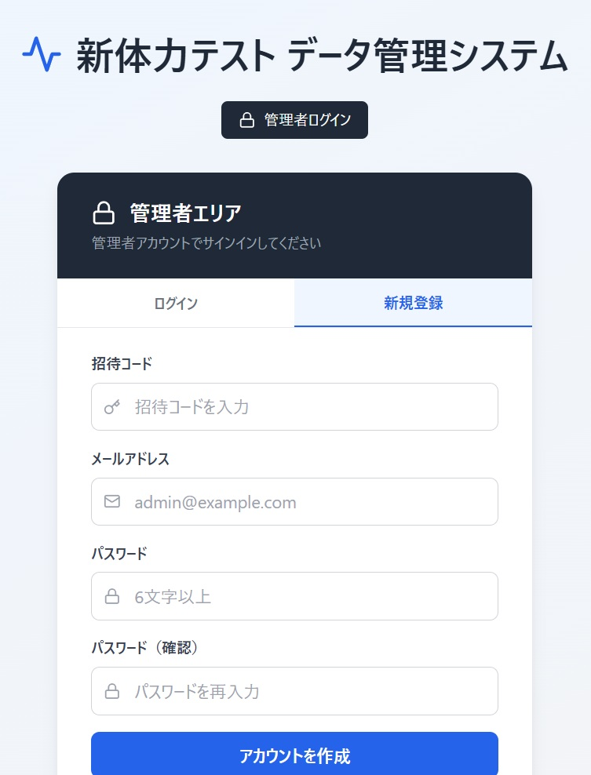
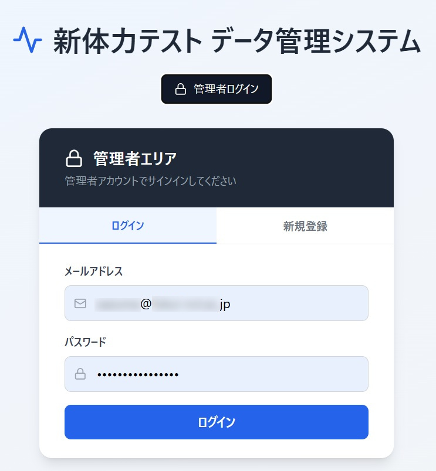
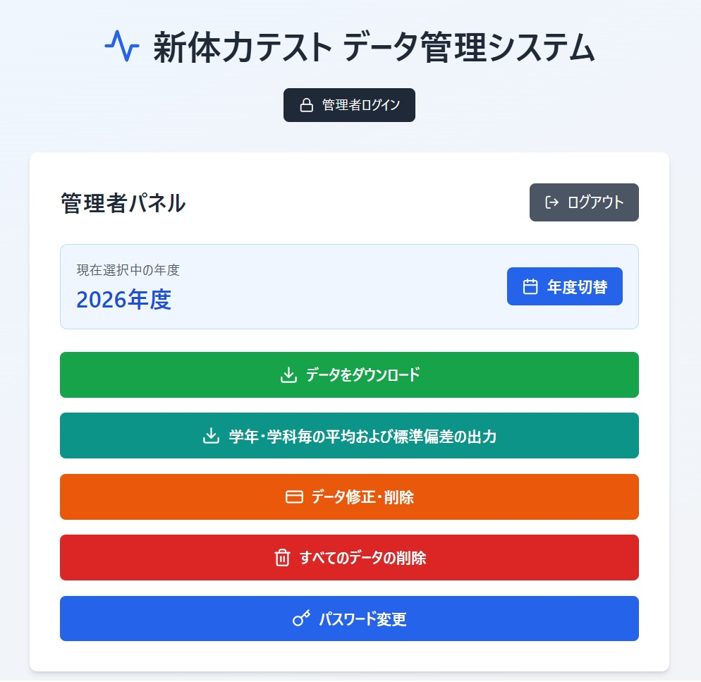

管理者へ
管理者は最初に管理者ログインボタンを押下し、ログインのための新規登録を行う。
新規登録には招待コードが必要であり、既定のコードを入力後、メールアドレスとパスワードを設定する。
データ管理システムのURL
https://fki-kosen-pftest.netlify.app/
新規登録画面

登録が完了すると、ログインタブからメールアドレスとパスワードを入力してログインする。
ログイン画面

管理者パネル

管理者が行える操作
-
1. 年度切替
過去の年度を選択し、その年度のデータを参照または追加できる。
-
2. データをダウンロード
学科・学年を指定して、該当データを CSV 形式でダウンロードする。
-
3. 学年・学科毎の統計データ出力
全学科・全学年の平均値および標準偏差を CSV 形式で出力する。
-
4. データ修正・削除
学年・学科・出席番号を指定してデータを呼び出し、修正または削除が可能。
-
5. すべてのデータの削除
選択中の年度に保存されている全データを一括削除する。
-
6. パスワード変更
管理者アカウントのパスワードを変更する。